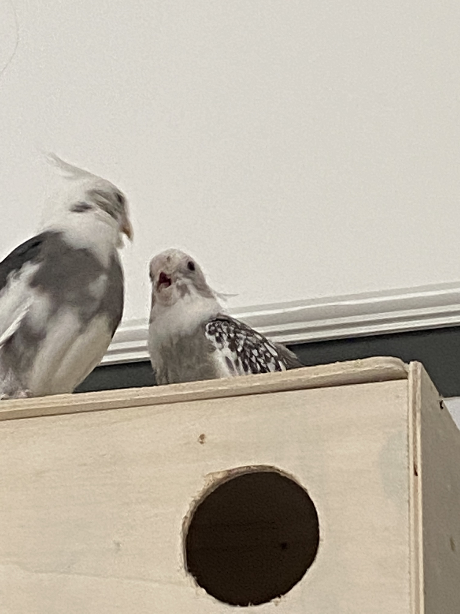

The Nymph Laboratories
Researching every day
> Jobs
> About Us
Our latest research
The ultimate Megamind Mash! What will he do?

Yeah, that's right! Lately our researches have found a weird behavioural pattern in Mash. It turns out that he has an increased amount of intelligence,
much more than other tiels. He turns out to have rather neutral behaviour, so not agressive but he doesn't show signs of helpfulness either. We are working
on finding out the exact amount of IQ but we suspect it's over 120.
A Brawlout in NymphTopia: 12 casualties and many wounded.

A brawlout in NymphTopia has lead to the death of twelve cockatiels. We suspect an anonymous tiel has hired another tiel to start the battle.
It was a blood bath and 30 people got hurt, in which 2 got hurt very badly, aside from the 12 deaths. The tiel that got hired turned out to be
EInfüßler Mash. He is soon to be arrested but for now, NL (C) is researching on him.
This "cute" Nymph is manipulative danger!

Beware! If you see this "cute" and girly eyed Mash. Hide your cockatiel! Here's why: So, this Mash is seen a Landmark
By Siri. All Nymphs are running to this Tiel for the ultimate thruth! To expose us! But don't fall for it! This girly eyed Mash will break your cockatiel emotionally!
We are investigating and Nymph Security has already contained this Monster.
Arda hiding in bear outfit arrested. Full story here.

Thanks to Nymph Security (NS for short), we have found and arrested the criminal Arda Yildiz. He in infamously known for the torture of the NymphTopia
with 3 successfull murders of innocent cockatiels but luckily we found him! He was hiding in a teddy bear suit found in the Chernobyl Reactor. We are harnessing information from his brain and we're gonna study it.
What happened to this army officer Nymph?

In the image above you can see 1st Lieutenant Derek von Tü. He was recently deployed to the Syrian warzone. His squad (37th Tü regiment) has been
drafted out of the war but he is nowhere to be seen. The last GPS signals show that he was standing still for multiple days. We think he's captured
but a rescue squad is on it's way. He is a veteran Krieger we hope to rescue soon.